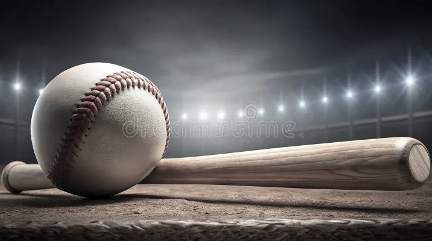

My skills
I would like to share with you about my skills. I used to play baseball for 6 years when I was in primary school. Through baseball, I learned teamwork, discipline, and communication skills. I also learned how to stay focused and keep trying even when things were difficult. This experience helped me become more confident and responsible.

Baseball tournament
When I played baseball, my team joined a tournament and won first place.
It was one of my best memories from primary school.
We practised hard before the tournament.
Some games were difficult, but we did not give up.
I learned how important focus and effort are.
Winning the tournament made me feel proud and confident.
This experience taught me to keep trying until the end.
Team Work
Baseball taught me how to work well with teammates.
I learned that communication is very important in a team.
We needed to trust each other during the game.
Sometimes I had to support my teammates when they made mistakes.
My teammates also helped me when I was struggling.
Through baseball, I learned discipline and responsibility.
This experience helped me become a better team player.